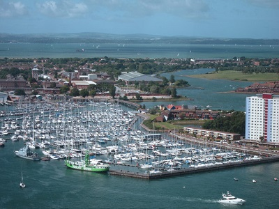
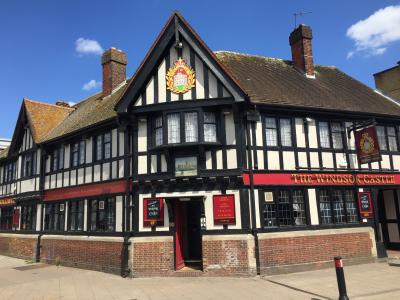
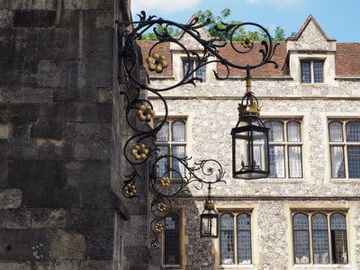
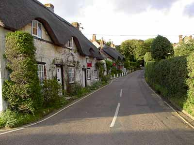

Situated just to the east of Portsmouth, Hayling Island is a haven of unspoilt beaches and countryside. Great for walking, cycling and water sports, explore harbour nature reserves and find a range of family fun activities. Visit nearby Emsworth and enjoy some great gourmet cuisine in this historic, harbour village.
Gosport is an inviting combination of waterfront activities, quiet shores, peaceful countryside and fascinating heritage. Explore the fascinating history and proud maritime heritage on the other side of Portsmouth Harbour, just a 4 minute ferry ride away. Go onboard a Royal Navy Submarine HMS Alliance and trace the history of our defences beneath the waves from the first RN submarine Holland 1 to the nuclear age. Be prepared to be bombarded at Explosion! where the weaponry and gunpowder that gave the Royal Navy its firepower is displayed and step back in time in the living re-enactment of the 17th-Century Village. Follow the Waterfront Trail - a 3km walk that links the town’s main attractions – while gazing at the yachts gliding in and out of the marina and soaking up impressive vistas of Portsmouth Harbour, just a 4-minute ferry ride away.
The International Maritime City of Southampton is fast becoming one of the most popular leisure and cultural destinations in the South. Its appeal lies in its diverse nightlife, exciting retail opportunities, superb heritage attractions and the excitement and charm of a bustling waterfront location.
An unspoilt cathedral city on the edge of the South Downs, Winchester is England's ancient capital and former seat of King Alfred the Great. Today, Winchester combines the best of city life with the freshness of the surrounding countryside. One hour from London, this is England as it ought to be.
This Island draws visitors because of its beautiful resorts which are ideal for any beach or sailing enthusiast. The area possesses over 60 miles of coastline along with bays and coves full of golden sand. Along with sailing, the island is also a wonderful site for walking, cycling windsurfing, and golf. The Isle of Wight has also been traversed by the Romans, monarchs, ancient tribes, and even dinosaurs and there are lots of visitor attractions that reflect its colourful character. Visitors can make the most of the Island’s mild climate with a host of spectacular outdoor events. Perhaps the most famous of these is Cowes Week in August, an international sailing regatta with lots of shoreside fun as well as plenty of opportunities to get afloat.